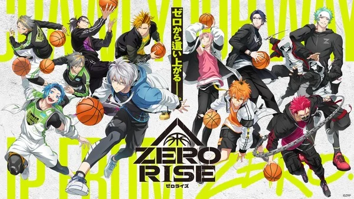
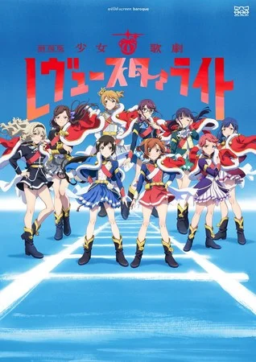
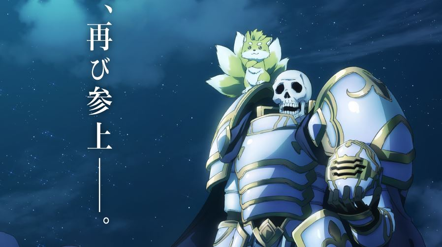
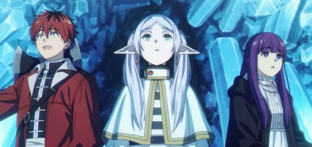
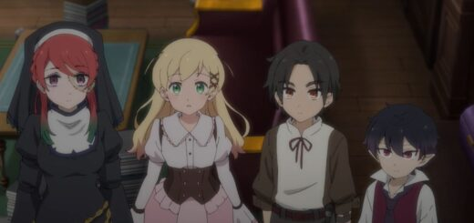

Os animes da temporada de inverno 2026 estão insanos de qualidade:
- Solo Leveling S2
- Sakamoto Days
- Dandadan S2
- Jujutsu Kaisen
- Hell’s Paradise
- Fire Force

Bushiroad revela projeto de basquete Zero Rise com anime de TV

Projeto de Shoujo Kageki Revue Starlight ganha nova sequência
A 'Temporada 1' do mangá Mujina into the Deep entra na batalha final

KonoSuba - 4° temporada é confirmada e ganha visual

Skeleton Knight - 2º temporada ganha trailer

Sousou no Frieren - 2º temporada ganha trailer com OP
Mangás mais Vendidos (Dezembro 29 - Janeiro 04)

Arne no Jiken-bo - Anime de Mistério sobre Vampiro Detetive ganha trailer de estreia

Recomendação de Hiroshi Shiibashi do Mr. Iwamoto Manga Gets TV Anime

Sousou no Frieren - 2º temporada ganha trailer com OP